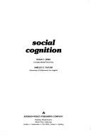

Social Cognition
Book·Susan T. Fiske, Shelley E. Taylor, 1984·社会认知

The first textbook in the field of social cognition. It describes people as "cognitive misers" and covers schemas, attribution and impression formation.
- Author
- Susan T. Fiske, Shelley E. Taylor
- Year
- 1984
- Difficulty
- Intermediate
- Kind
- Overview
- Schools
- Social Cognition
Editions
- Chinese edition 《社会认知》 [美]苏珊·T.菲斯克 / [美]谢利·E.泰勒 · tr. 高定国 · 机械工业出版社 · 2025 Douban page ↗
- English edition Social Cognition Susan T. Fiske, Shelley E. Taylor · Addison-Wesley, first edition · 1984 Open Library ↗